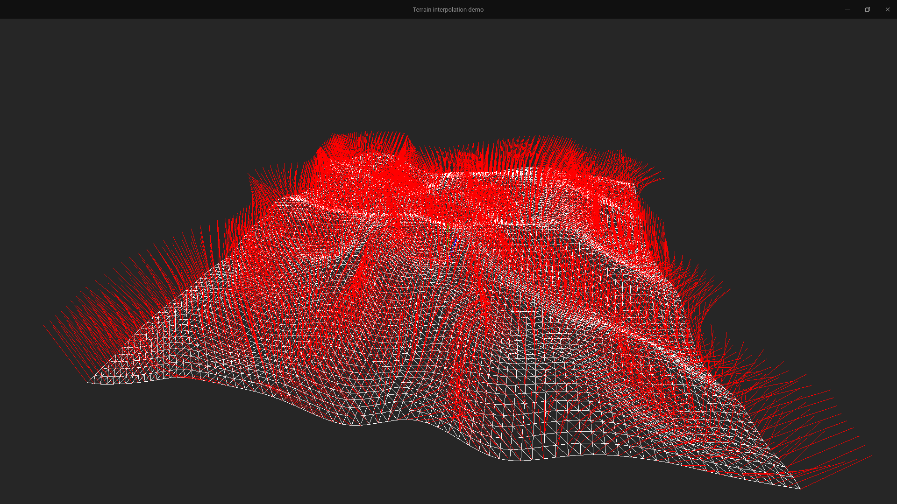

Ce projet se donne pour but de générer procéduralement un terrain à partir d'un maillage de points de très faible résolution, en mettant en oeuvre divers modèles de subdivision de surface. Les technologies utilisées sont :
L'intégralité de cette implémentation est réalisée en C++. Le code source est disponible sur Github.
Pour des raisons évidentes de lisibilité du code, le projet est organisé en plusieurs fichiers classes, dont les rôles sont décrits ci-dessous.
classDiagram
Drawable <|-- Mesh
Drawable <|-- Terrain
Terrain o-- Mesh
Drawable : draw()
Drawable : drawReferenceSystem()
Mesh : GLuint vertex_buffer
Mesh : GLuint primitive_buffer
Mesh : vector vertices
Mesh : vector primitives
Mesh : apply(function algorithm, int iterations)
Terrain : lod
Terrain : rows
Terrain : cols
Terrain : randomize()
Le fichier main.cpp contient le code principal du projet. Il crée un objet de type Terrain et l'affiche. La gestion de la fenêtre est réalisée par la librairie glfw, et le rendu est effectué par OpenGL. L'utilisateur peut à tout moment déplacer la caméra et zoomer sur le terrain à l'aide des touches fléchées (rotation) et de Z ou S (zoom).
Le lod (level of detail), ou niveau de détail du terrain, est un paramètre qui détermine la résolution du terrain. Plus le niveau de détail est élevé, plus le terrain est lisse. Il s'agit d'un entier qui définit le nombre d'itérations de subdivision de surface à effectuer. Les touches + et - permettent de l'augmenter ou de le diminuer.
Les algorithmes de subdivision utilisés sont très modulaires, et peuvent être aisément interchangés. Ils sont décrits dans le fichier algorithms.hpp. Dans le cadre de ce projet, nous nous étions donné pour but d'implémenter l'algorithme de subdivision de surface Loop. Cependant, par manque de temps, nous nous sommes rabattu sur une version simplifiée: on crée trois nouveaux sommets par triangle, ainsi que leur primitives associées, puis on "floute" le terrain par moyennage des coordonnées des sommets voisins.
Le résultat est successivement:
| algorithme appliqué | résultat |
|---|---|
| aucun | terrain très anguleux, de faible résolution |
| subdivision naïve | terrain très anguleux, mais de haute résolution |
| subdivision + floutage | terrain lissé par la passe de "floutage" des coordonnées des sommets |
Terrain généré aléatoirement (bruit blanc) avec une résolution de 10x10. On peut voir en blanc le terrain, en rouge les normales associées aux vertices.
Même terrain, avec coloration des faces. Comme on peut le voir ici, sans interpolation préalable, ce modéle est inutilisable.

Terrain lissé par la passe de floutage des coordonnées des sommets. 
Terrain obtenu par la même méthode que précédemment, auquel on a ajouté un bruit blanc de haute fréquence (simule les irrégularités du sol).

Même terrain, mais coloré en fonction de la normale et de la hauteur de chaque sommet.

On peut voir que le terrain obtenu est très lisse, est relativement proche de ce que l'on pourrait rencontrer dans la réalité. Bien des améliorations sont envisageables, telles qu'une simulation d'érosion, ou encore une génération de textures/cartes de normales plus précises, cependant dans le cadre de ce projet, nous nous contenterons de cette simple démonstration de faisabilité.